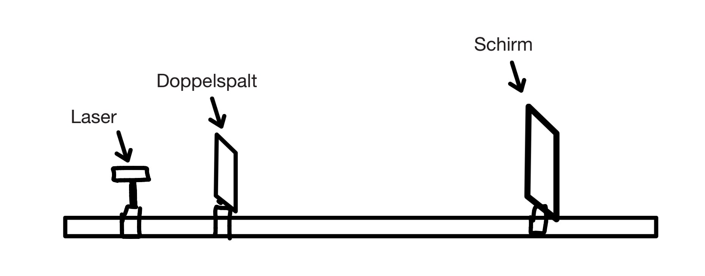
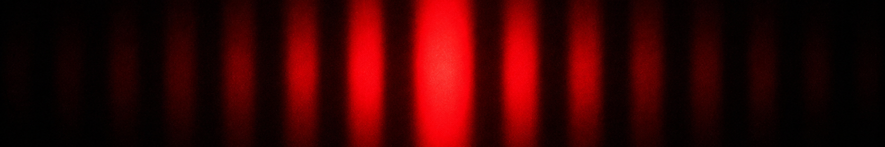
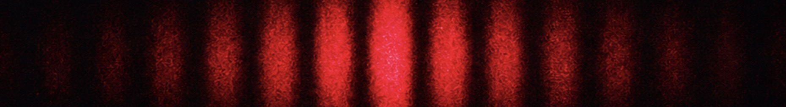
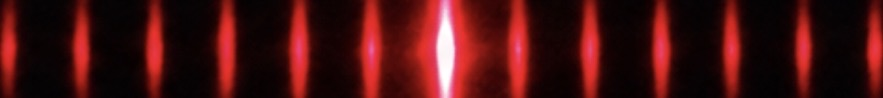

Welleneigenschaften des Lichts
Ist Licht eine Welle?
Hier geht es zu dem Doppelspaltexperiment
Interferenzphämomene
Dank der Welleneigenschaften des Lichtes, lassen sich bei Experimenten auch Interferenzmuster erkennen. Interferenzmuster entstehen, wenn zwei Wellen sich gegenseitig aufheben oder verstärken.
Positive Interferenz, beispielsweise, entsteht an Punkten, wo zwei Wellenberge bzw. zwei Wellentäler aufeinandertreffen und sich damit verstärken.
Negative Interferenz entsteht durch das Aufeinandertreffen eines Wellenbergs und eines Wellentals. Im Optimalfall heben diese sich so auf, dass an der Stelle nichts passiert.
Mit folgendem Experimentaufbau lassen sich solche Interferenzmuster erkennen:

Wenn man einen Einzelspalt zwischen die Lichtquelle und die Leinwand setzt, entsteht folgendes Muster:

An Stellen, an denen zwei Wellen positiv interferieren, erkennt man einen Streifen, welcher zu seinen Rändern hin in seiner Intensität abnimmt.
An denen, wo genau n+1/2 Wellenlängen interferieren,
entsteht negative Interferenz und beide Wellen löschen sich so aus, dass auf der Leinwand an der entsprechenden Stelle gar kein Licht mehr ankommt.
Zwischen den Stellen vollkommen positiver und denen vollkommen negativer Interferenz, entsteht ein Übergang.
Wenn man einen Doppelspalt zwischen die Lichtquelle und die Leinwand setzt, entsteht folgendes Muster:

Es fällt auf, dass , obwohl jetzt mehr Spalte geöffnet sind, weniger Licht auf der Leinwand ankommt.
Das ist ein Beweis dafür, dass Licht nicht ausschließlich in Teilchenform vorliegen kann. Es muss sich selbst auslöschen können und dafür an mehreren Stellen zur gleichen Zeit sein.
Beim Gitter entsteht wiederum folgendes Muster:

Es entstehen zwischen den eigentlichen Maxima noch weitere, kleinere Maxima, die mithilfe folgendender Abbildung verständlicher werden dürften.
Hast du alles verstanden?
Hier geht es zu einem Quiz